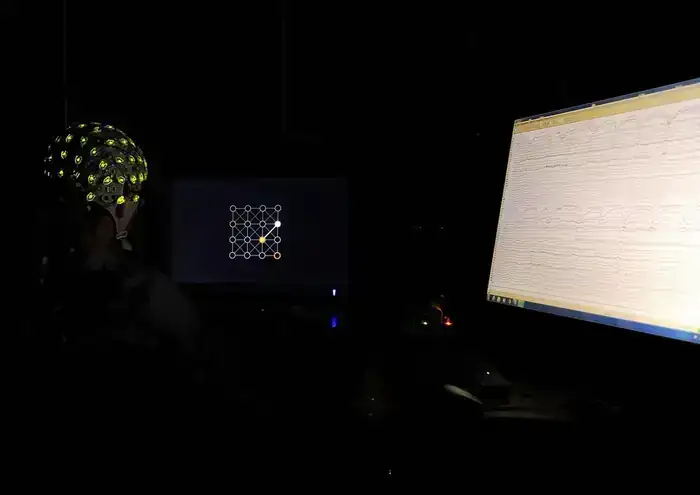
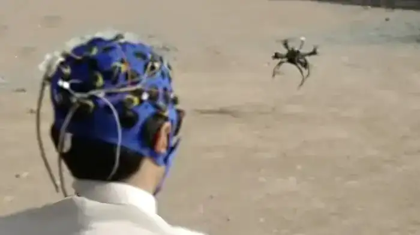
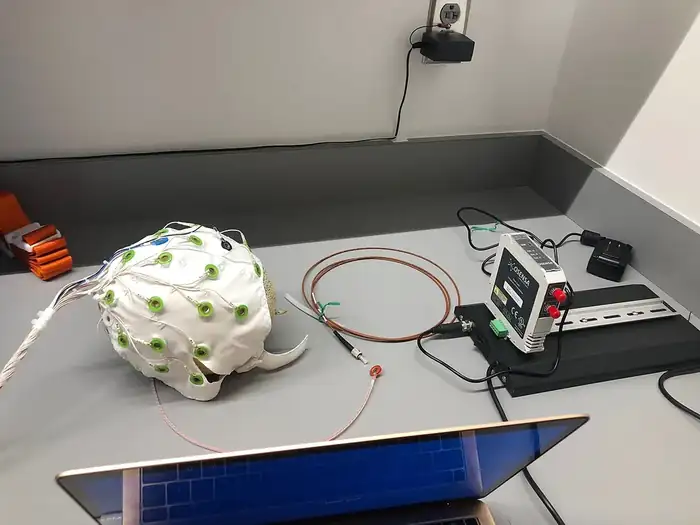

The experiment
Libet asked subjects to flex a wrist whenever they felt like it, and to note the position of a fast-moving clock hand at the moment they felt the urge. Scalp electrodes recorded a readiness potential (RP) — a slow negative wave over motor cortex — that began roughly 300–500 ms before the reported urge, and well before the movement.
Maps, diagrams and images






The inference drawn was dramatic: the brain initiates the action before the person is aware of deciding, so the conscious will is not the cause.
Why the inference is contested
The timing method is shaky. Subjects report the position of a clock hand from memory, and the 'moment of awareness' is reconstructed, not measured. Small systematic errors matter when the effect is a few hundred milliseconds.
The RP may not be a decision. Aaron Schurger and colleagues argued in 2012 that the RP looks like stochastic accumulation of background noise crossing a threshold — a process that would produce the same signal even with no decision being made. Their model reproduces the data without any pre-conscious 'choice'.
Libet himself did not conclude free will is dead. He proposed a conscious veto: the urge arises unconsciously, but the person can cancel it. That is a different claim from 'the decision is made for you'.
Shown: deliberate actions are preceded by measurable preparatory brain activity, and the feeling of having decided is not the first event in the chain.
Not shown: that the outcome is fixed before the person is aware, or that conscious deliberation plays no role. Later experiments with more careful timing and better modelling have narrowed the gap substantially.
Philosophically undecided: whether determinism at the neural level is compatible with responsibility. That is a separate argument — compatibilism versus libertarian free will — and no experiment settles it.
The popular summary, 'science proves you have no free will', is doing a lot of work that the papers do not support.
Why it is in the archive
Because it is the single most over-claimed result in neuroscience, and the correction is interesting in its own right: the same data support a picture of the brain as a noisy accumulator tipping into action.
See gut-brain signalling for another case where a real effect gets a much bigger story attached.
Sources for this page
- Wikipedia, “Neuroscience of free will” — Libet and the replicationsen.wikipedia.org
- Libet et al. (1983), Brain 106, 623 — time of conscious intentiondoi.org
- Schurger, Sitt & Dehaene (2012), PNAS — an accumulator model for the readiness potentialdoi.org
- Stanford Encyclopedia of Philosophy, “Free Will”plato.stanford.edu
Open resources on this topic
- PapersOpen-access articles: DOAJ · PubMed Central · Internet Archive Scholar
- BooksPublic-domain and borrowable copies: Open Library · Project Gutenberg · Google Books · Internet Archive
Cite this page
Momin, S. (2026). Readiness Potentials and Free Will. The Larger World Archive. https://drsamonline.github.io/LARGE_GLOBE/readiness-potentials.htmlMomin, Sohil. “Readiness Potentials and Free Will.” The Larger World Archive, 2026, https://drsamonline.github.io/LARGE_GLOBE/readiness-potentials.html.Momin, Sohil. “Readiness Potentials and Free Will.” The Larger World Archive, 2026. https://drsamonline.github.io/LARGE_GLOBE/readiness-potentials.html.@misc{readiness2026readiness,
author = {Momin, Sohil},
title = {Readiness Potentials and Free Will},
year = {2026},
howpublished = {The Larger World Archive},
url = {https://drsamonline.github.io/LARGE_GLOBE/readiness-potentials.html},
note = {Last reviewed 20 November 2026}
}Last reviewed 20 November 2026 · Corrections policy · this page is not peer reviewed